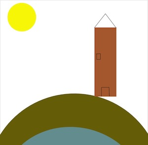

Video sobre Veneza
Veneza
Dentro deste quarto um outro quarto
Com um Carpaccio nas ruas de Veneza
Segunda imagem sussurro de surpresa
E um pouco assim são as ruas de Veneza
Em fundo glauco de laguna ou vidro
E um pouco assim em nossa vida o duplo
Espelho sem perdão do não vivido
Caminha destinado a ser perdido
Sophia de Mello Breyner Andresen
[1]
Para fazer este desenho inspirei-me nas várias e grandes pontes que estam espalhadas ao longo de veneza. Assim como algumas das suas torres.
